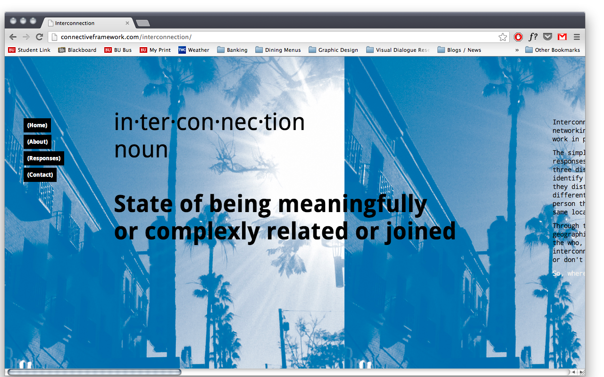
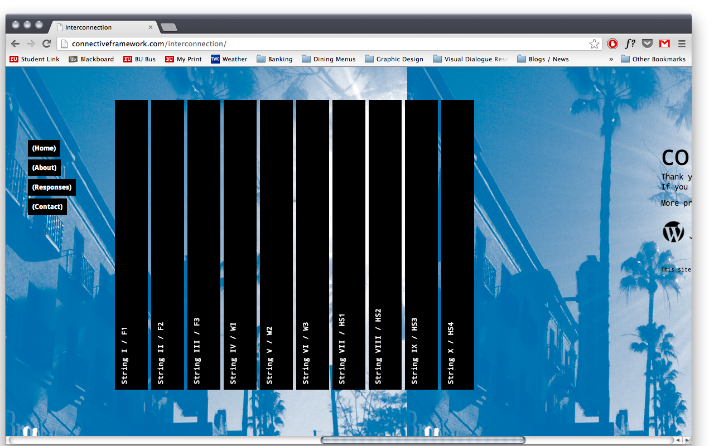
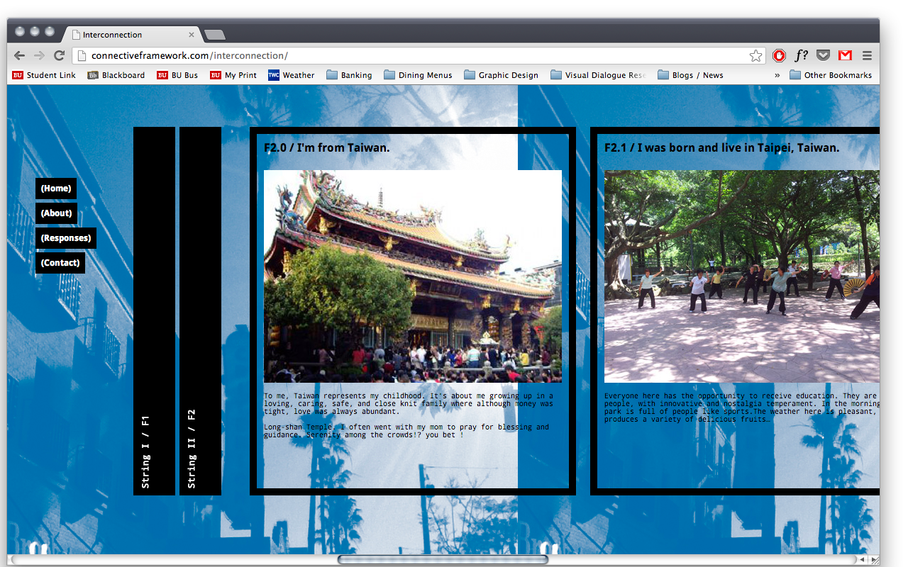

INTERCONNECTION



Interconnection is a project that studies individual geographic ties and networking connections. The simple question, “Where are you from?” can result in a number of valid responses from the same person. I presented this question to 10 people from three distinct networks whom I “know from Los Angeles” (the place I identify with the most.) I also ask them to include a photo of something they distinctly associate with the location. This project explores the different interpretations that people can have of the same place. Each person then refers me to another person they consider to also be from the same location, and presumably the chain goes on.
Through these channels of connections that all started in Los Angeles, I was taken to different parts of the globe. This project explored the ‘who’, the ‘what’, and the ‘where’ people identify with, and the many ways they interconnect.
View Website